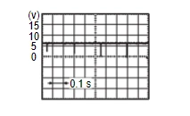

駕駛資訊與多媒體 - 雷達系統 - 故障碼/電路診斷 - 雷達 (雷達控制單元) - B2721-35 中央感測器 [RL]
診斷程序
N516030170058Q00ENG
1.
檢查 REAR 雷達 感知器 訊號 LH INNER CIRCUIT (OPEN)
將點火開關置於關閉位置。
斷開/拔除雷達控制單元接頭與後方雷達感測器 LH inner 接頭。
檢查雷達控制單元線束接頭與後方雷達感測器 LH inner 接頭之間的導通性
雷達控制單元
後雷達感測器 左內側
導通
接頭
端子
接頭
端子
B20
16
B459
2
存在
檢查結果是否正常？
是
前往步驟 2
.
否
修復線束或接頭。
2.
檢查 REAR 雷達 感知器 LH INNER GROUND CIRCUIT
檢查雷達控制單元線束接頭與後方雷達感測器 LH inner 線束接頭之間的導通性。
雷達控制單元
後雷達感測器 左內側
導通
接頭
端子
接頭
端子
B20
23
B459
3
存在
檢查結果是否正常？
是
GO TO 3
.
否
修復線束或接頭。
3.
檢查 REAR 雷達 感知器 訊號 LH INNER
連接雷達控制單元接頭與後方雷達感測器 LH inner 接頭。
開啟點火開關。
依下列條件檢查雷達控制單元端子之間的訊號。
+
−
狀況
電壓
雷達控制單元
接頭
端子
接頭
端子
B20
16
B20
23
變速桿位置在 R 檔。
當感測器偵測到障礙物時

CF100C9XAA00ENG
檢查結果是否正常？
是
更換雷達控制單元。請參閱
拆卸與安裝
.
否
更換左後雷達感測器（內側）。請參閱
拆卸與安裝
.
已加入書籤
書籤數量過多。
請刪除後重新加入書籤。
×